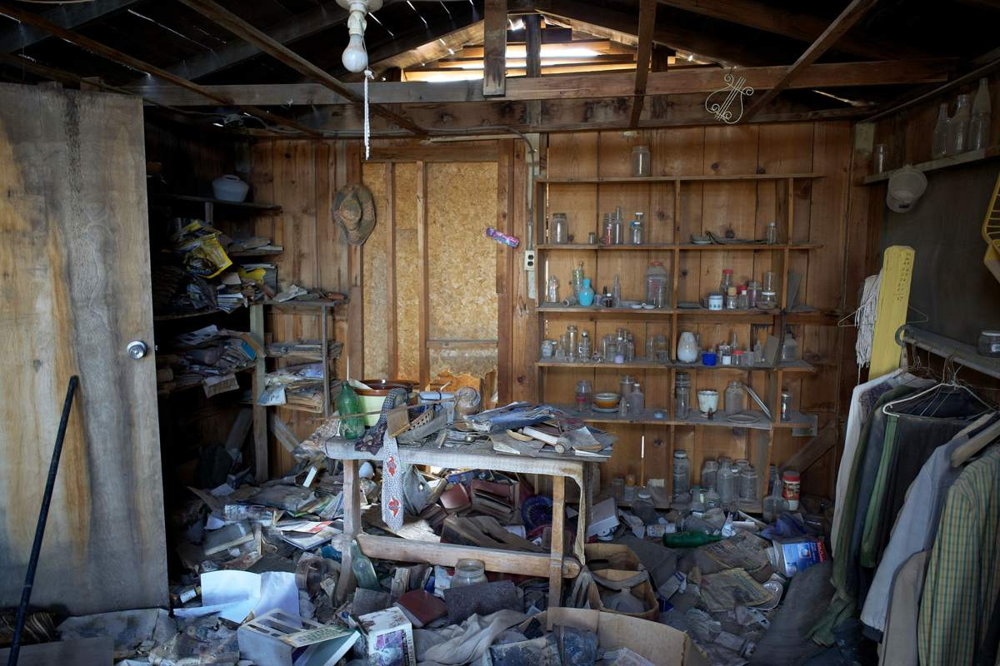

Hoarding cleanouts are one of the jobs we do most carefully. A crew goes room by room, sorts as it goes, and hauls out furniture, clothing, paper, appliances, and household goods in the order you decide. The work is paced across as many trips as the house needs. Nothing gets thrown out that you have not looked at first.

Most people who call about a full house are not the person living in it. They are an adult child, a sibling, or a spouse who has been quietly worried for a long time and has finally reached a week where something has to happen. If that is you, here is what the work actually looks like, so you can walk in knowing.
What a hoarding cleanout involves
The physical job is the same work we do on any full-house cleanout, done slower and with more sorting. A crew comes in, clears a path first, and then works one room at a time. It is our own crew rather than labor dispatched off an app that morning, which matters more on this kind of job than any other, and who comes to your house covers why.
What comes out on a typical job:
- Furniture, including pieces that have been buried or damaged and are not worth saving.
- Paper and cardboard, which in a full house is usually the largest single category. Newspapers, mail, magazines, boxes, files.
- Clothing and textiles, bagged as they come out so nothing gets scattered.
- Appliances, including refrigerators and freezers that have been out of service.
- Kitchen and bathroom contents, expired food, containers, and packaging.
- Bulk household goods, the collections, the duplicates, the things bought and never opened.
- Yard and garage overflow, because in most of these houses the garage and the side yard filled up first.
What we do not take is short and it is the same list as any other job. Household hazardous waste is the one thing we have to leave behind: paint, solvents, motor oil, gasoline, propane tanks, pool chemicals, pesticides, and anything with asbestos in it. Those go to a city household chemical collection program, free for residents, and we will point you to the right one. Plano runs a household chemical collection program for residents, and every neighboring city has an equivalent. The full list of what does and does not go on the trailer is on our what we will and will not take page.
How the sorting works so nothing important gets lost
The fear in almost every one of these calls is the same. Something that matters is going to end up on the trailer.
So the default is that nothing leaves without a look. We work in three piles as we go: keep, donate, haul. You or whoever the family has put in charge makes every call. If a decision is hard, the item goes back in the keep pile and gets revisited later. We would rather make a second trip than force a decision on somebody standing in their own hallway.
A few things worth knowing before day one:
- Cash, documents, and jewelry turn up. In full houses they turn up regularly, tucked in books, coat pockets, and envelopes. Anything like that goes straight to you, not on the trailer.
- We are haulers, not appraisers. If you think something in the house has real value, get it looked at before we come. We will tell you honestly when we are out of our depth.
- Photographs and paperwork get set aside, not bagged. Those are the things people regret losing, and they are almost never where anyone expects.
You do not have to clean up before we get there. Nobody on our crew is going to react to the state of the house. We have been in a lot of them. Our people are our own crew, not gig labor hired off an app that morning, which is exactly why we are comfortable sending them inside somebody's home.
How long it takes and how it gets paced
A full house is rarely one day. More often it is a set of visits spread over a week or two, sometimes longer, with a stopping point agreed on before each one starts.
Pacing matters more here than speed. Clearing a house faster than the person living in it can process is how a cleanout turns into a crisis, and it is also how houses refill. The mental health organizations that work with hoarding disorder are consistent on this point. The International OCD Foundation's hoarding resource center and the American Psychological Association's overview of hoarding both describe forced or surprise cleanouts as something that tends to make matters worse rather than better. That is not our field, and we will not pretend it is. It is why we take the pace from the family instead of setting it.
Practically, that means we book in blocks. You tell us the rooms and the order. We clear what we get through, we sweep, and we come back.
Where the house is a rental and the tenant is already gone, the pacing question goes away and a legal one takes its place. That version is covered in clearing a rental after an eviction or an abandonment.
What this costs and how we quote it
We do not quote a full house over the phone. For anything at this scale, we come look first, walk the rooms with you, and give you a firm number before anything is lifted. Disposal fees are inside it. The quote is the bill.
We run our own crew, so you get a straight answer about what the job will take and how it will run. If the honest answer is that your city's bulky trash pickup can handle a portion of it for free, we will say that. For a free quote, tell us about the house and we will come out.
If you want to see how a job runs from the first call to the empty room, we wrote that up in how junk removal works.
Who else you might need
We haul. That is the boundary, and it is worth saying plainly so you can line up the rest.
Biohazard cleaning, animal waste remediation, and structural repair are specialist trades with their own licensing. If a house needs any of those, it needs them before or alongside hauling, not instead of it. Say so when you call and we will tell you straight whether we are the right first call.
For an estate that also involves a death in the family or a move into care, our estate cleanout service covers the same work with the paperwork side accounted for. If the job is one packed garage rather than a whole house, garage cleanouts is the closer fit. And when a family only has one weekend to work with, we run pickups seven days a week, so same day junk removal is typically possible across the northern suburbs if you call before noon.
When the property is a rental and the accumulation belonged to a tenant who has already gone, rental property cleanout covers that version of the job, including the turnover timing.
Frequently asked questions
Will your crew judge the house?
No. Nobody on the crew comments on the state of a house, on site or afterward. We have worked in a lot of them and it is a job, not a story we tell later.
Does the person who lives there have to be present?
That is the family's call, not ours. Many people prefer to be there for the sorting and step out for the loading. Others hand off decisions to one relative. Both work, as long as somebody with authority is on site.
Can you do it in one day so it is over with?
Sometimes, but we usually advise against it for a full house. Clearing faster than someone can process tends to backfire. We would rather book several visits and have it hold.
What happens to everything you haul out?
Usable furniture, clothing, and appliances go to local donation partners. Metal, cardboard, and paper go to recyclers. The goal on every load is keeping more than half of it out of the landfill.
Do you handle paint, chemicals, or medical waste?
No, and neither can any licensed hauler. Those go to your city's household chemical collection program, free for residents. Ask us and we will send you your city's page.
When the same house also has to be emptied because a parent is moving into care, downsizing a parent into assisted living lays out the sorting order that keeps paperwork and family items from leaving by mistake.
If you are the one who has to make this call, you are already doing the hard part. Send us a few photos or ask us to come look, and we will tell you honestly what the work involves before you commit to anything.